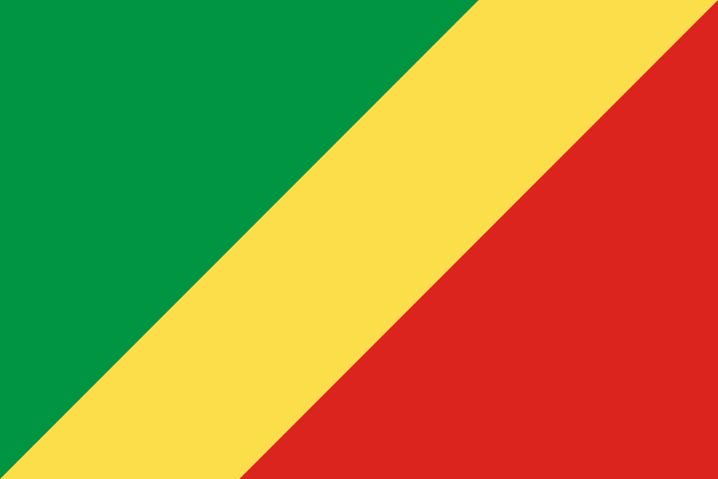

About me
My name is Ravel BITOUNGUI. I was born on May 12th in the Republic of Congo where I live my whole family.
I'm currently working in freelance as a Web Developer.
By using HTML, CSS, JS, PHP & SQL,
I design static and dynamic web sites and applications.
Pointe-Noire, Republic of Congo

Official Flag of Congo
The Republic of Congo is a blessed country. Know as the lungs of Africa, the Congo basin is the world's largest carbon sink,
absorbing more carbon than the Amazon.
The Congo River is the second most powerful in the world behind the Amazon.